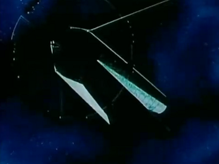
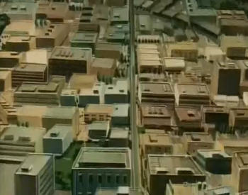

Shangrila & Shambhala Shangrila & Shambhala
Side 1 Bunch 1, Colony Management Corporation Headquarters Mirrored Colony Cluster The original space colony, Side 1 Bunch 1 is still the official headquarters of the Colony Management Corporation, and one of the most heavily populated and industrialized space colonies to date. It survived the battles of the One Week War, both through luck and through the assistance of its own CMC defense force, and now manages the remainder of the civilians of Side 1, while still maintaining corporate holdings on Baikonour, Mars and in the blackness of Deep Space. The shipyards at Shambhala still produce shuttles and Interplanetary Transport Craft which are used by all the powers of the solar system, but in addition are now producing Balls and Torieres fighters for the Sides own defense. They are neutral, but after seeing the One Week War firsthand, the citizens of Shangrila do not wish to take any chances. Shangrila and Shambhala  |